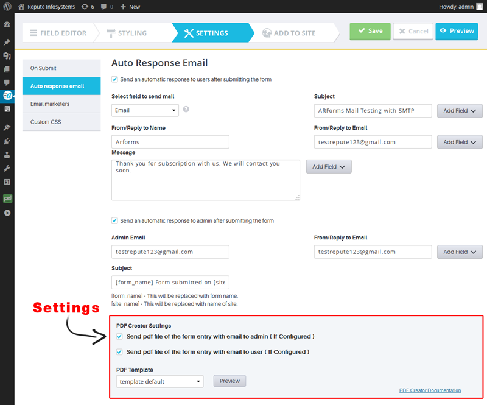

ARForms has new extension which creates PDF of form entries. PDF Creator For ARForms is just another wordpress plugin which you can install and manage just like other wordpress plugins.
PDF creator For ARForms plugin integrates your form entries and PDF creation in a single process. You can send generated PDF as an attachment with email to administrator as well as users immediately after form submission from ARForms.
The best part of this extension is You can customize PDF as per your requirement. You just need to use our ready shortcodes and you can generate PDF exactly you want. No any programming skill required!
You can install plugin either of these two methods.
1) New install via FTP
a. Download the plugin from CodeCanyon, and extract it. You should find a directory arformspdfcreator.
b. In your WordPress installation, upload arformspdfcreator to wp-content/plugins/
c. Activate the "PDF Creator For ARForms" plugin through the Plugins menu from WordPress admin panel.
2) New install via the WordPress Uploader
a. Download the plugin from CodeCanyon
b. Log in to your WordPress admin panel
c. go to Plugins -> Add New -> Upload
d. Click on choose file and browse the download package from CodeCanyon. When the plugin uploads successfully, click on Activate Plugin link.
After activating the plugin, Go to "Arforms" and click on any existing form. and then go to "Settings" page. You will see PDF Creator settings under "Auto Response Email" settings. Also, you will be able to see PDF icon in entries listing.

Configuration for PDF will take just 5 minutes with ARForms.
To configure PDF, click on form for which you want to generate PDF after form submission.
Go to Settings => Auto Response Email.
Tick the checkbox near " Send pdf file of the form entry with email to admin ( If Configured ) " if you want to send PDF as an attachement with email notification to administrator.
Tick the checkbox near "Send pdf file of the form entry with email to user ( If Configured ) " if you want to send PDF as an attachement with email notification to user who has submitted the form.
Note: Please confirm that you checked for "Send an automatic response to users after submitting the form" AND "Send an automatic response to admin after submitting the form". If you did not checked for this options, users and administrator will not be notified after form is submitted so PDF will not be sent as an attachment.
You can generate PDF with two different templates.
1) Template 1:
By selecting this option you will get generated PDF like below image:
2) Template 2:
By selecting this option you will get generated PDF like below image:
[ARF_GetLabel:ID]
ARF_GetLabel : This Shortcode is used to perform custom operations with Field label in PDF. For Example, [ARF_GetLabel:1] this will display label first field of form.
[ARF_GetValue:ID]
This Shortcode is used to perform custom operations with Field Values in PDF. For Example, [ARF_GetValue:1] this will display first field of value from form.
{ARF_IF}...{/ARF_IF}
This Shortcode is used for to place conditions based on field label and its value.
For Example,
(1) {ARF_IF [ARF_GetLabel:1]==First Name} => Code will be executed between two if shortcode ( Open and close tags ) Only and only if first field's Label will be "Full Name". You can use Not Equal to Condition like, {ARF_IF [ARF_GetLabel:1]!=Full Name} then condition will be true if first field's value will not equal to "Full Name".
(2) {ARF_IF [ARF_GetValue:1]==Repute} => Code will be executed between two if shortcode ( Open and close tags ) Only and only if first field's Value will be "Repute". You can use Not Equal to Condition like, {ARF_IF [ARF_GetValue:1]!=Repute} then condition will be true if first field's value will not equal to "Repute".
you can user IF inside loop, for Example,
{ARF_IF [ARF_GetLabel:VAR]==Full Name}
...HTML CONTENT...
{/ARF_IF}
for check label name not in loop then,
{ARF_IF [ARF_GetLabel:VAR]!=Full Name}
...HTML CONTENT...
{/ARF_IF}
for check value in loop then,
{ARF_IF [ARF_GetValue:VAR]==Repute}
...HTML CONTENT...
{/ARF_IF}
for check value not in loop then,
{ARF_IF [ARF_GetValue:VAR]!=Repute}
...HTML CONTENT...
{/ARF_IF}
We also provide ODD/EVEN row for content in loop, use of MOD in Even rows with ARForms PDF Creator is like,
{ARF_IF [VAR MOD 2==0]}
...HTML CONTENT...
{/ARF_IF}
to use MOD in Odd rows with ARForms PDF Creator is like,
{ARF_IF [VAR MOD 2==1]}
...HTML CONTENT...
{/ARF_IF}
[ARF_LOOP]...[/ARF_LOOP]
This Shortcode is used for to print Label and Values in PDF using loop. To print all records using loop then just need to add [ARF_LOOP] [/ARF_LOOP] for labels and values.
For Example,
If you want to display only first five fields from loop then you can use like this,
[ARF_LOOP VAR=1 TO VAR=5]
...HTML CONTENT...
[/ARF_LOOP]
If you want to display only first five fields from loop with descending order then you can use like this,
[ARF_LOOP VAR=5 TO VAR=1]
...HTML CONTENT...
[/ARF_LOOP]
To display a Label inside loop than you need to write [ARF_GetLabel:VAR]
To display a Value inside loop than you need to write [ARF_GetValue:VAR]
[ARF_GetEntryID]
You can use your Entry ID anywhere in PDF by using this shortcode. For example you want to print Invoice ID in PDF at that time, it will be helpful.
[ARF_Signature]...[/ARF_Signature]
With this shortcode, you can change signature displayed in PDF Footer. For that, just add your text between shortcode.
with ARForms PDF Creator you can create custom templates for form entires. You can add as many as templates you want to. ARForms PDF Creator allows to create template as per your requirement and add it to folder and you are ready to go!.
To add New template in ARForms PDF Creator then you need to follow below steps:
(1) Go to wp-content/plugins/arformspdfcreator/core/templates.
(2) Create New file or Copy any existing template.
(3) Rename the template. (Note: Do not leave space in Template File Name)
As you will be able to see, there is "
You can add different CSS in header and can add custom HTML content inside body tag. You can also use different shortcodes in template Conditioning Shortcodes, Loop Shortcodes, Can Add infinite number of loop inside templates as described above.
To change is CSS Classes, you need to change css file which is located at:
wp-content/plugins/arformspdfcreator/css/arformspdfcreator.css
Here are some important classes names which will help you in customization:
two_row_even => css class for even rows
two_row_odd => css class for odd rows
arf_pdf_viewentry_left => will be used for label column
arf_pdf_viewentry_right => will be used for values column
arf_pdf_container => main class for PDF output
arf_field_values => main outer div class for values
Version 1.1 (08 November, 2014)